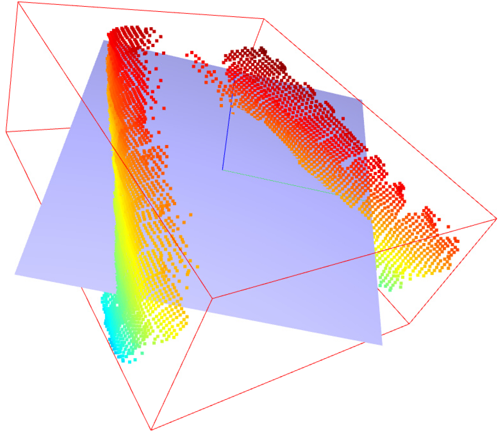

Achieving single-handed squeezing motions for articulated objects presents a complex challenge, as the grasping strategy is highly dependent on the object's type and functionality. Generic objects, such as rigid cylinders or rubber balls, do not require precise finger coordination and are primarily involved in pick-and-place tasks, where a firm grasp is sufficient. In contrast, articulated objects, including pliers, clips, and spray bottles, demand more sophisticated grasping strategies. These objects can be handled in two distinct modes: (1) Basic grasping, where the objective is simply to securely lift and place the object, and (2) Functional grasping, which involves not only holding the object firmly but also manipulating it to perform its intended function. Functional grasping requires coordinated hand-object interactions, making it a significantly more complex task in robotic manipulation.
While extensive research has been conducted on grasping objects [1] for pick-and-place tasks [2][3], functional grasping presents a significantly greater challenge. This task requires robotic grippers to align with an object's design and intended use, often necessitating in-object rotations, translations, or specific trajectories. More generally, it involves understanding the object's purpose and its physical constraints. For instance, pliers require a rotational motion about a fixed axis, while a lotion bottle dispenser operates along a translational axis. Traditional pick-and-place techniques fail to accommodate these functional requirements, underscoring the need for dedicated exploration of functional grasping for articulated objects.
Figure 1: Categorization for multi-affordance and object articulation.
Project Scope
This study focuses on objects with either rotational or translational axes, including
pliers, wire snippers, spray bottles, drills, tweezers, scissors, and lotion bottles.
These objects exhibit key characteristics such as multiple affordances, revolute or
prismatic joints, and, most critically, functional utility. Unlike conventional
pick-and-place tasks, our objective extends beyond stable grasping to achieving
precision grasps that enable the robot to effectively utilize the object.
We employ a KUKA robotic arm in conjunction with an
Allegro hand. The primary object of study is a 3D-printed plier,
scaled to match the dimensions of the Allegro hand. Compared to commercially available
pliers, the 3D-printed variant exhibits distinct properties, including reduced weight,
an enlarged contact surface for finger interaction, and lower spring tension,
facilitating a more controlled squeezing motion.
Approach
Functional grasping can be systematically divided into two key stages:
1. Object Grasping
In this initial stage, the robotic hand establishes a grasp on the object. To qualify as a
correct grasp, the following conditions must be met:
Stability: The grasp must ensure a secure hold, preventing the object
from slipping or shifting during manipulation.
Functional Alignment: The grasp must be positioned in a manner that
facilitates the object's intended function, minimizing the need for additional in-hand
reorientation or adjustment.
A grasp that satisfies both criteria enables the transition to the subsequent stage of
functional manipulation, where the object is actively used according to its designed affordances.
2. Object Manipulation
In this post-grasp stage, the robotic hand must effectively manipulate the object in accordance
with its intended function. The object must move along its designated functional axis
(e.g., a plier executing an opening and closing motion). To ensure successful manipulation,
the following conditions must be met:
Trajectory Alignment: The manipulation must strictly follow the object's
functional trajectory, maintaining consistency with its intended use.
Grip Retention: The object must remain securely grasped throughout multiple
iterations of the manipulation process, without unintended slipping or dropping.
Meeting these criteria ensures that the robotic system can not only grasp objects effectively
but also perform task-specific operations with stability and precision.
Experiment Setup
The experimental setup is designed to satisfy both grasping and post-grasp manipulation conditions.
The plier is positioned on a dedicated stand beneath the Allegro hand to ensure a controlled grasping
environment. Although not depicted in Figure 2, an RGB-D camera is integrated into the system to
facilitate point cloud generation for object perception and grasp planning.
1. Object Placement: The plier is securely positioned on a dedicated holder to maintain
a consistent initial pose.
2. Point Cloud Generation: A ZED stereo camera captures a partial point cloud of
the scene, providing a 3D representation of the object.
3. Affordance Prediction: A one-shot affordance prediction model, DINO [4],
is employed to generate both 2D and 3D affordance masks, which are superimposed on the
partial point cloud.
4. Grasp Synthesis: The SpringGrasp [5] framework is utilized to compute
feasible grasp candidates based on the extracted affordance information.
5. Grasp Filtering: The generated grasp trajectories are evaluated and filtered
based on 2D and 3D probability assessments (Eq. 1), ensuring the selection of a high-confidence
precision grasp.
6. Object Grasping: The Allegro hand executes the selected grasp to pick up
the object from the stand, assessing stability and alignment with the functional constraints.
7. Functional Manipulation: The robotic system undergoes iterative learning
through multiple demonstrations to refine and optimize functional object usage.
The primary challenge lies in establishing robust functional grasps. My goal was to come up with a evaluation method that can answer the question "Is it a functional grasp?" for a proposed grasp. The main objective is not to develop a new grasping method or algorithm, but rather a mechanism that can accurately evaluate the functionality and robustness of the grasp. Thus, for the grasping method, we use SpringGrasp [5], an optimization-based approach that generates robust
grasps from 3D point clouds (from three different angles). The main purpose of SpringGrasp is stable grasping, thus, it does not account for the functionality or charactersitics of the object.
SpringGrasp computes multiple feasible grasp candidates by analyzing the point cloud and
the physical properties of rigid, non-articulated objects. However, this assumption does not
always hold in our case, as we deal with articulated objects with functional constraints.
Consequently, for the generated point cloud and potential grasp trajectories (see Figure 3),
the accuracy of a precision grasp is evaluated based on the alignment between the
robotic fingers, affordance regions, and trajectory vectors.
Figure 3: Color vectors represent fingers of Allegro hand. The orange points are overlapped predicted affordance regions.
Pipeline
1. 3D Object Reconstruction: A single stereo camera is employed to capture a
partial 3D point cloud of various objects, with a primary focus on the plier. This process
provides a sparse yet informative spatial representation of the object’s geometry.
To predict affordance regions for novel objects, we utilize AffCorrs [4], a model that
leverages hand-annotated query images for affordance learning. Initially, these affordance
predictions are generated in 2D image space and subsequently mapped onto the corresponding
3D point cloud representation (see Figure 4), enabling spatially-aware affordance reasoning.
Figure 4: Affordance prediction in 2D and 3D space.
2. Grasp Generation and Evaluation: We feed the partial point cloud into the SpringGrasp
model to generate stable grasps, which were then evaluated using multi-affordance alignment
metrics (both 2D and 3D). This allowed us to predict functional grasps without physical execution, basically stream-lining the grasp prediction without doing costly real-world experiments.
3. Parameter Optimization: Through iterative grasp generation across various objects with
differing point cloud characteristics, we optimized the SpringGrasp parameters to enhance grasp feasibility.
SpringGrasp initializes from pre-grasp positions, which significantly influence the resulting grasp quality.
More precise pre-grasp positions reduce the number of generated grasps while improving their overall feasibility.
To determine optimal pre-grasp positions, we leverage object geometry and human grasping intuition.
In human grasping, the palm naturally aligns parallel to an object's flat surface, forming an orthogonal relationship with the z-axis of the plane defined by the object. As illustrated in Figure 5, the blue vector
represents the z-axis, and the object plane is aligned across the wider, flatter axis. This alignment is
determined using a bounding box derived from the object's geometric properties.
By utilizing the axis and dimensions of the bounding box, we refine the hyperparameter range for SpringGrasp,
ensuring more efficient and accurate grasp generation. Future work can extend this methodology to develop
an optimized loss function for grasp evaluation.

Figure 5: Identifying the orthogonal axis relative to the object plane using bounding box geometry.Figure 6: Further visualization of the orthogonal axis alignment (post-grasp generation).
Results
Results indicate a strong correlation between 2D and 3D affordance generalization accuracy. The effectiveness of our multi-affordance alignment method was assessed by comparing the robot’s executed grasps against the corresponding ground truth affordance regions, ensuring accurate alignment with the intended functionality.
Figure 7: Intersection over Union (IoU) for evaluating 2D affordance predictions and Chamfer Distance for assessing 3D affordance alignment.
In the grasp evaluation process, ensuring a clean and well-structured point cloud is
critical for achieving stable and functional grasps. Several factors influence the
success of grasp selection and execution:
Full Point Cloud > Predicted Affordance Mask: A complete point cloud provides
richer contextual information, enhancing affordance predictions and improving the identification
of optimal graspable regions.
Outlier Removal for Wrist Pose Stability: A cleaned point cloud,
free of outliers and disconnected clusters, is essential for maintaining accurate initial wrist
poses. Unfiltered noise can significantly degrade grasp feasibility.
Impact of Wrist Pose on Grasp Selection: Variations in the initial wrist
position directly influence grasp selection, affecting both the stability and
functionality of the final executable grasp.
Optimization of Grasp Scoring: A grasp scoring mechanism enables
a more effective comparison of multiple feasible grasps, improving selection robustness.
Physically Infeasible Grasps Due to Wrist Position: Even a high-score
grasp may be physically infeasible if the initial wrist position
is misaligned, emphasizing the importance of precise pose estimation.
Limitations and Future Work
Figure 8: IsaacGym with Plier from PartNet-Mobility-Dataset.
Embedding physical world knowledge into robotic systems remains a formidable challenge.
In the context of dexterous manipulation, accurately modeling and understanding
intrinsic object characteristics is particularly complex. Additionally, while reinforcement
learning (RL) holds significant promise, the inherent challenges of reward function design,
including its complexity and sparsity, present major obstacles in robotic learning.
By the conclusion of the eight-week research period, I was unable to develop a sufficiently
effective reward function to guide the Allegro hand in achieving stable object grasping.
Although sim-to-real transfer is a viable approach for training robotic systems, several
barriers persist, including the steep learning curve of simulation software and the difficulty
of accurately modeling real-world environments. These challenges highlight the necessity of more
robust methodologies for improving the generalization and efficiency of robotic learning frameworks.
Figure 9: Proposed robot learning framework.
Acknowledgements
I express my sincere gratitude to the Stanford LINXS program for hosting the 2024 summer cohort and providing an invaluable research opportunity. A special thanks to Aimee C. Garza for her dedication in organizing an exceptional program that fostered both learning and collaboration.
I am also deeply grateful to my research mentors, Claire Chen and Professor Jeannette Bohg, for welcoming me into IPRL. Their patience, guidance, and enthusiasm have been instrumental in expanding my understanding of robotics. Their willingness to mentor and share their expertise has truly inspired me throughout this journey.
References
[1] Agarwal, Ananye, et al. "Dexterous functional grasping." 7th Annual Conference on Robot
Learning. 2023.
[2] Bohg, Jeannette, et al. "Data-driven grasp synthesis—a survey." IEEE Transactions on robotics 30.2 (2013): 289-309.
[3] Zeng, Andy, et al. "Robotic pick-and-place of novel objects in clutter with multi-affordance grasping and cross-domain image matching." The International Journal of Robotics Research 41.7 (2022): 690-705.
[4] Hadjivelichkov, Denis, et al. "One-shot transfer of affordance regions? AffCorrs!"
Conference on Robot Learning. PMLR, 2023.
[5] Chen, Sirui, Jeannette Bohg, and C. Karen Liu. "SpringGrasp: An optimization pipeline for robust and compliant dexterous pre-grasp synthesis." arXiv preprint arXiv:2404.13532
(2024).